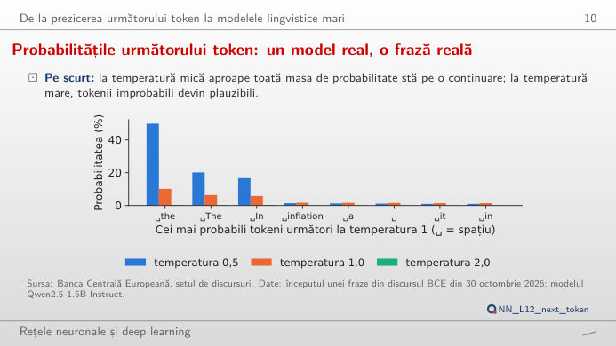
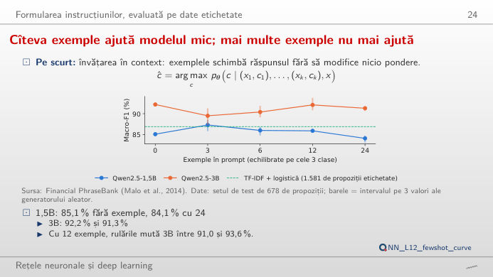
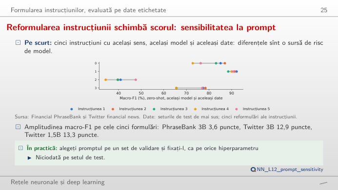
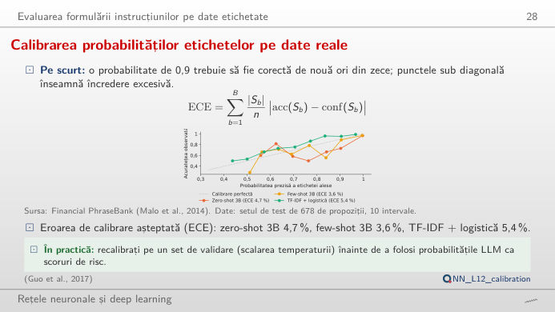
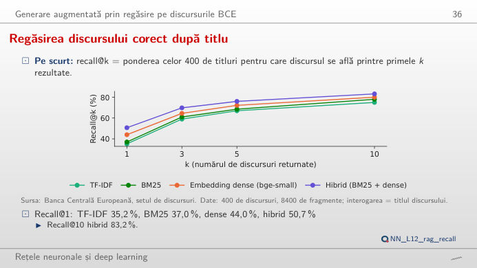
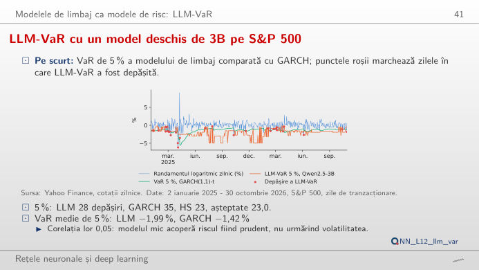

În stînga este slide-ul din curs, în dreapta aceeași figură, recalculată în browser din ieșirile modelelor deschise rulate pentru curs (Qwen2.5 cu 0,5, 1,5 și 3 miliarde de parametri) cînd modificați un control. Nimic nu este inventat: fiecare probabilitate, etichetă și estimare a valorii expuse la risc (VaR) de mai jos a fost produsă de modele pe date reale. Butonul ▶ modifică parametrul principal pas cu pas. Sub fiecare figură: o sinteză numerică, o întrebare pentru sală și Quantlet-ul cu codul figurii.
Cum scrie un model de limbaj: următorul token · Formularea instrucțiunilor (prompt engineering), măsurată · Generarea augmentată prin regăsire (RAG) · Un model de limbaj ca estimator al riscului (LLM-VaR)
Cum scrie un model de limbaj: următorul token
Probabilitățile următorului token: un model real, o frază reală

Răspuns
Împărțirea logiților la T ascute distribuția cînd T < 1 și o aplatizează cînd T > 1. Pe întregul vocabular de 151.665 de tokeni, cursul măsoară 49,9% pentru „the” la T = 0,5 și doar 0,4% la T = 2; entropia crește de la 1,74 la 6,20 și 10,29 nats. Figura renormalizează pe cei mai probabili k tokeni, ca eșantionarea top-k: cu k = 1 modelul scrie mereu „the” (decodare lacomă). Cuvîntul rostit efectiv, „prices”, nu este printre cei opt tokeni cei mai probabili. Pentru clasificare și extragere folosiți T = 0; temperaturile mari sînt pentru generarea de idei.
Formularea instrucțiunilor (prompt engineering), măsurată
Cîteva exemple ajută modelul mic; mai multe exemple nu mai ajută

Codul acestei figuri: NN_L12_fewshot_curve · deschide în Colab
Răspuns
Nu. Fără exemple (zero-shot), Qwen2.5-3B atinge un macro-F1 de 92,2%; cu k = 1, 2, 4 și 8 exemple, media pe trei extrageri aleatoare ale exemplelor este 89,5%, 90,4%, 92,1% și 91,3%, iar cu k = 1 extragerile variază între 87,5% și 91,1%. Modelul mai mic, de 1,5 miliarde, cîștigă puțin la k = 1 (85,1% → 87,3%) și pierde la k = 8 (84,1%). Contează ce exemple extrageți aproape cît contează cîte. Macro-F1 mediază scorul F1 (media armonică a preciziei și a sensibilității) celor trei clase, deci clasa negativă, rară, contează cît cea neutră.
Reformularea instrucțiunii schimbă scorul: sensibilitatea la prompt

Răspuns
Mult pentru modelul mic: pe Financial PhraseBank, Qwen2.5-1.5B variază între 72,8% și 87,0% (14,2 puncte) de la o formulare la alta, Qwen2.5-3B doar între 88,5% și 92,2% (3,6 puncte). Pe tweet-urile financiare ambele sînt fragile: 34,3–47,6% pentru 1,5B și 65,5–78,4% pentru 3B. Matricea de confuzie arată unde merg erorile; un scor raportat pentru un LLM este scorul unui singur prompt, deci testați mai multe formulări și raportați intervalul.
Sînt calibrate probabilitățile etichetelor? Fiabilitatea pe date reale

Răspuns
Da: mutați pragul și urmăriți cum scade acoperirea, în timp ce acuratețea pe propozițiile cu răspuns crește. Aceasta funcționează numai dacă probabilitățile sînt calibrate, adică dacă „90% sigur” are dreptate în circa 90% din cazuri. Cursul măsoară eroarea de calibrare așteptată (ECE) pe Financial PhraseBank: 4,7% pentru zero-shot 3B, 3,6% pentru few-shot 3B și 5,4% pentru TF-IDF (frecvența termenului – frecvența inversă în documente) cu regresie logistică. Comparați modelul 0,5B: curba sa de fiabilitate este departe de diagonală, iar un prag aduce mult mai puțin.
Generarea augmentată prin regăsire (RAG)
Găsirea discursului corect după titlu

Răspuns
Cea hibridă. Recall@1 este 35,2% pentru TF-IDF, 37,0% pentru BM25 (Best Matching 25, un scor pe cuvinte-cheie), 44,0% pentru embedding-urile dense și 50,7% pentru metoda hibridă, care combină rangurile BM25 și dense; la k = 10 cele patru ajung la 75,0%, 78,0%, 80,0% și 83,2%. Cuvintele-cheie și sensul greșesc la interogări diferite, de aceea combinarea lor ajută. Cu regăsire, modelul 3B răspunde corect la „cine a ținut acest discurs?” pentru 81,2% din 160 de discursuri recente, față de 13,8% din propria memorie.
Un model de limbaj ca estimator al riscului (LLM-VaR)
LLM-VaR cu un model deschis de 3B pe S&P 500

Răspuns
La 5%, LLM-VaR are 28 de depășiri (6,1%, p Kupiec = 0,295), simularea istorică 23 (5,01%, p = 0,991), iar GARCH(1,1) cu erori Student-t 35 (7,63%, p = 0,016, respins la 5%). La 1%, numerele sînt 4, 6 și 9, pentru 4,6 așteptate. Testul Kupiec verifică dacă ponderea depășirilor este egală cu nivelul VaR; o valoare p sub 0,05 respinge modelul. LLM-ul trece testul numărului de depășiri, dar VaR-ul său aproape nu reacționează la volatilitate (corelația cu GARCH este 0,05): mutați începutul perioadei și vedeți unde se grupează depășirile.
Următorul token și RAG: discursurile Băncii Centrale Europene (BCE), 2022–2026. Sentimentul: Financial PhraseBank (Malo et al., 2014; propozițiile cu acord de 100% între adnotatori, setul de test de 678) și Twitter financial news (Zeroshot, eșantion de test de 900 de tweet-uri). Modelele: Qwen2.5-Instruct (Alibaba), rulate local; probabilitatea unei etichete = masa de probabilitate a primului său token. LLM-VaR: randamentele logaritmice zilnice ale indicelui S&P 500, 2 ianuarie 2025 – 30 octombrie 2026, fereastră de 250 de zile, după Pele et al. (2026).